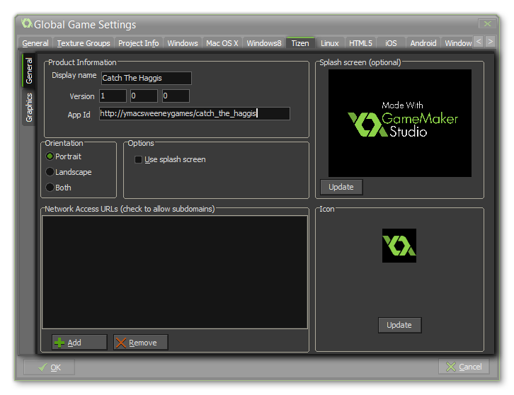

The Tizen Tab
This section deals with the Tizen tab of the Global Games Settings Window.
The Tizen tab is split into two separate sub-tabs (accessible on the left of the window) to make changing and updating the information for your game clearer and less complicated. These tabs are explained in the following sections.
General
 The General tab is where you control the game information sna splash screens, and the first thing to fill out for your Tizen game is the Product Info which has the following fields:
- Display Name: The name of your game as it is to be displayed on the Tizen device and stores.
- Version: The version that you are building.
- App Id: The app id in url format.
Once that is done you will need to give your game an icon and a Splash Screen. The icon should be authored as a 108x108px *.png file, but unlike other app icons, this should be circular
with a transparent border. The splash screen should be 800x480px and *.png too, and it will be scaled to fit higher resolution devices. Note that for the splash screen to show you must also tick the
Use Splash Screen option. You are can then choose to lock the game to a specific orientation by checking either landscape, portrait, or both in the Orientation section of the tab.
The section of this tab labelled Network Access URLs is where you must specify the URL of any page that your device will access. Once you add a domain to the URL list, you can also tick the checkbox
to the left to indicate that all sub-domains of this URL should also be permitted. If you do not specify any URL, the game will not be able to use any of the http functions.
Graphics
The graphics tab permits to change some of the behaviours related to how your games graphics are compiled and displayed, with the following options available:
- Texture Page - Set the size of the texture pages to be created for your game. The default (and most compatible) size is 1024x1024, but you can choose from anywhere between 256x256 up to a whopping 8192x8192! There is also a button marked View which will generate the texture pages for this platform and then open a window so that you can see how they look. This can be very useful if you wish to see how the texture pages are structured and to prevent having texture pages larger (or smaller) than necessary.
NOTE : Be aware that the larger the size of the texture page, the less compatible your game will be.